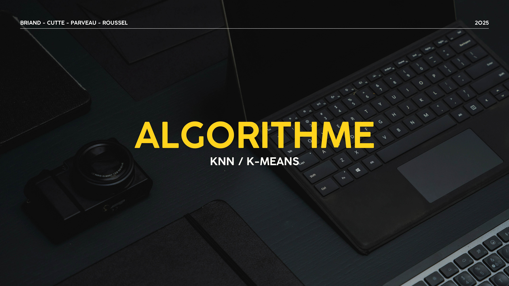
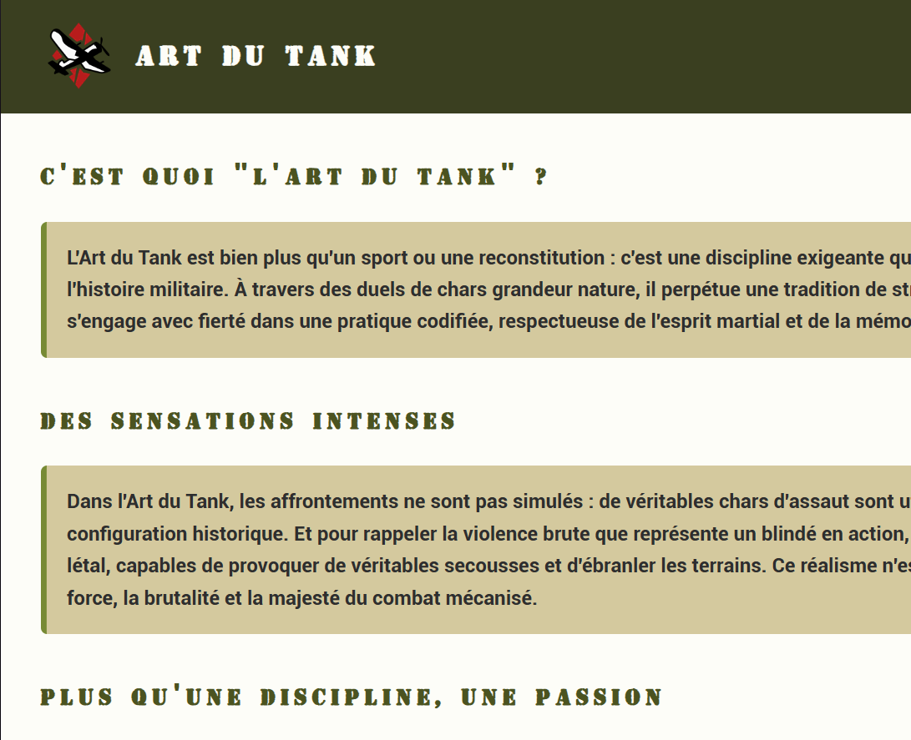
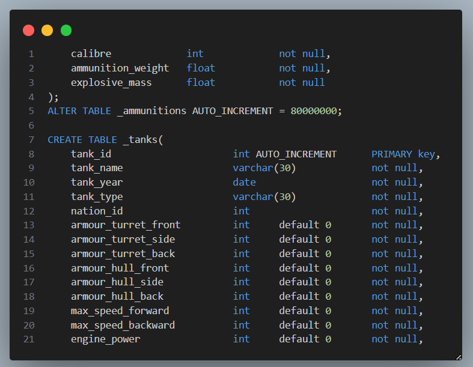
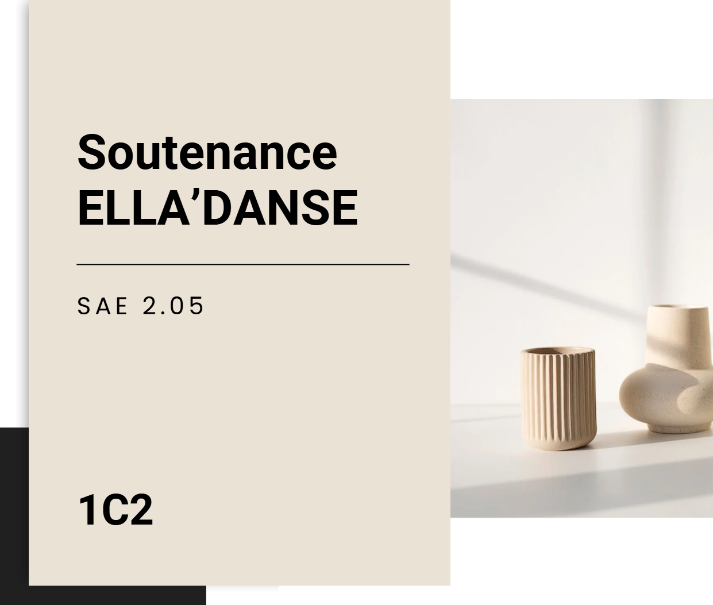
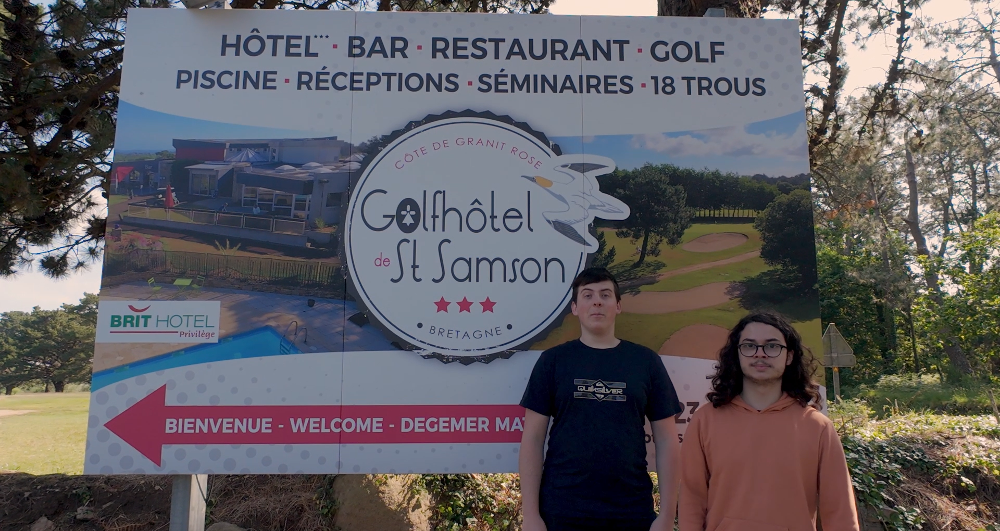

A propos de moi
Salut, je m'appelle Mewen Roussel. Je suis étudiant en première année de BUT Informatique à l'IUT de Lannion. J'avais déja quelques connaissances en informatique car grâce à la spécialité NSI suivie au lycée mais cette première année m'a permis de découvrir plusieurs langages de programmation (comme Python, C ou Java), de travailler sur des projets concrets en groupe, et de me familiariser avec des outils professionnels comme Git, Docker ou Visual Studio Code.
Ma formation
-
BUT Informatique
Septembre 2024
IUT de Lannion
-
Bac Générale
Septembre 2021 - Juin 2024
Lycée La Fontaine des Eaux, Dinan
Spécialité NSI / Mathématique
Mon CV
 Télécharger le CV
Télécharger le CV
Les Compétences
-
UE 1 : Développement des applications informatique simple
-
UE 2 : Appréhender et construire des algorithmes
 -
UE 3 : Installer et configurer un poste de travail
 -
UE 4 : Mettre en place et concevoir une base de données à partir d'un cahier des charges client
 -
UE 5 : Identifier les besoins métiers des clients et des utilisateurs
 -
UE 6 : Identifier ses aptitudes pour travailler dans une équipe
